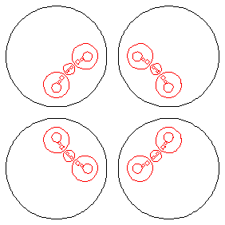

Suppose the circles C1, ... , CN bound discs D1, ... , DN having disjoint interiors.
Starting with a point z0 outside the discs, we pick a circle Ci1 at random and invert z0, obtaining a new point
z1 = Ii1(z0).
Then we pick another circle Ci2 at random, and invert z1, obtaining a new point
z2 = Ii2(z1) = Ii2(Ii1(z0)).
Continue in this way,
zk = Iik(zk-1) = Iik(Iik-1(...Ii1(z0)...)).
with the restriction that no ij equals ij+1.
Sketch
The limit set as the nested intersection, recalling the Cantor set construction, and the standard deterministic IFS for the gasket.
|
 |
Because the inverting circles are disjoint, the radii converge to 0.
A standard adderss argument shows the limit set of any orbit is identical with the intersection of this nested sequence.
Return to circle inversion fractals.